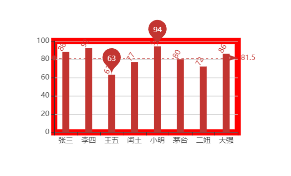
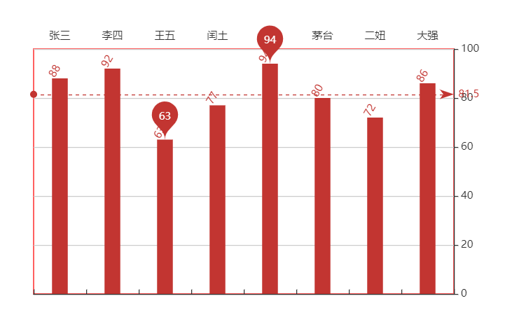

数据可视化ECharts-直角坐标轴配置
本文最后更新于：1 个月前
直角坐标轴的配置
涉及到上面我们学习完的，柱状图，折线图，散点图
配置1：gird 网格
配置2：坐标轴axis
配置3：缩放区域dataZoom
配置1 gird网格
gird是用来控制直角坐标系的布局和大小
x轴和y轴就是在gird的基础上绘制出来的
grid: { // 坐标轴容器
show: true, // 是否可见
borderWidth: 10, // 边框的宽度
borderColor: 'red', // 边框的颜色
left: 120, // 边框的位置
top: 120,
width: 300, // 边框的大小
height: 150
},
显示gird show
gird的边框 borderWidth borderColor
gird的位置和大小 left top
配置2 坐标轴axis
坐标轴分为x轴和y轴
坐标类型 type
value：数值轴，自动会从目标数据中读取数据
category：类目轴，该类型必须通过data设置类目数据
xAxis: {
type: 'category',
data: xDataArr,
position: 'top' // 控制坐标轴的位置
},
yAxis: {
type: 'value',
position: 'right' // 控制坐标轴的位置
},
series: [
{
name: '语文',
type: 'bar',
markPoint: {
data: [
{
type: 'max', name: '最大值'
},{
type: 'min', name: '最小值'
}
]
},
markLine: {
data: [
{
type: 'average', name: '平均值'
}
]
},
label: {
show: true,
rotate: 60,
position: 'top'
},
barWidth: '30%',
data: yDataArr
}
]显示位置 position
xAxis：可取值为top或者bottom
yAxis：可取值为left或者right

配置3 区域缩放dataZoom
dataZoom 用于区域缩放，对数据范围过滤，x轴和y轴都可以拥有
dataZoom是一个数组，意味着可以配置多个区域缩放器
类型 type
slider：滑块
inside：内置，依靠鼠标滚轮或者双指缩放
指明产生作用的轴
xAxisIndex：设置缩放组件控制的是哪个x轴，一般写0即可。
yAxisIndex：设置缩放组件控制的是哪个y轴，一般写0即可。
指明初始状态缩放的情况
start：数据窗口范围的初始百分比
end：数据窗口范围的结束百分比
小结 直角坐标系
直角坐标系的图表
柱状图，散点图，折线图
网格grid
x轴和y轴的依附
坐标轴
xAxis和yAxis
取值类型 value 和 category
区域缩放 dataZoom
x轴和y轴都可以设置
inside和slider
本博客所有文章除特别声明外，均采用 CC BY-SA 4.0 协议 ，转载请注明出处！